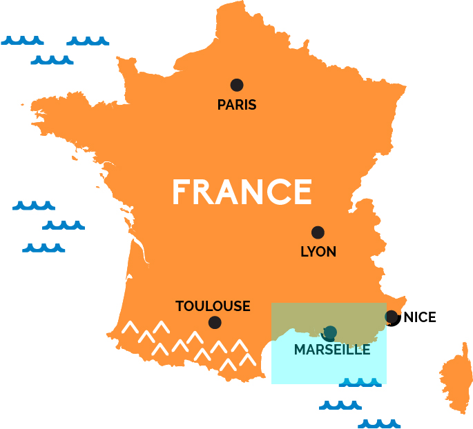
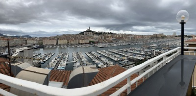 After Chartres, I returned to Paris and caught a high-speed train to Marseille. Somehow I lucked out with an affordable hotel room right on the ancient harbor. When Saints Mary Magdalene, her sister Martha, and her brother Lazarus were set adrift in a boat without a rudder or sails, they landed near Marseille and preached to its inhabitants. Lazarus became their first bishop. |
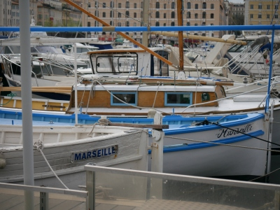 Marseille Harbor |
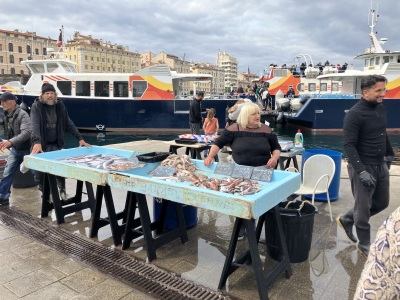
Marseille Harbor |
|---|---|---|
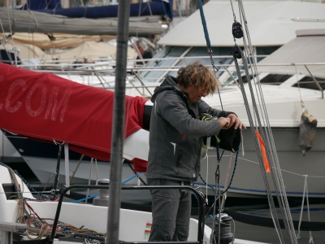
Marseille Harbor |
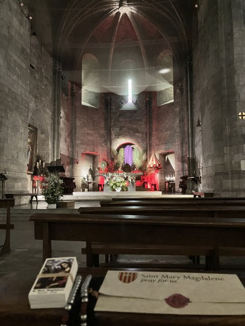
The Abbey/Basilica of St. Victor, established in the early 300s. I came specifically to reverence the relics of St. John Cassian, one of the most important of the Desert Fathers. His writings and example are foundational to the monastic life in the Church. |
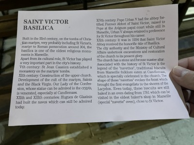 More information on the abbey |
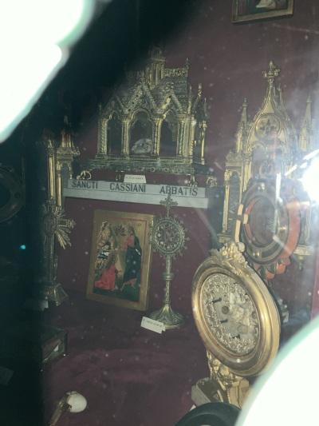
I was disappointed to see, however, that they had veiled the relics of St. John Cassian in anticipation of Holy Week. I snuck my phone behind the veil and snapped a photo - at the top you can see the front portion of his skull. |
In the crypt of the abbey is an altar in a grotto area dedicated to Saints Lazarus and Mary Magdalene. The grotto was supposedly a gathering area for early believers in Marseille.
|
Also in the crypt is the sarcophagus of St. John Cassian. He founded an abbey here in the 5th century. |
As I exited the abbey I spotted a pigeon (rock dove) eyeing me from a little cleft in the side of the abbey. I had to chuckle because it reminded me of the book that I wrote about St. Mary Magdalene entitled "Like a Dove in the Cleft of the Rock". |
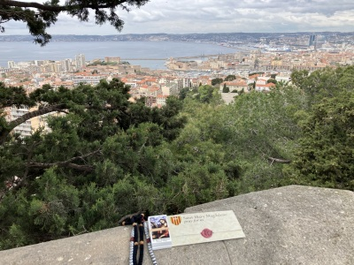 High above the harbor of Marseille is the majestic Notre Dame de la Garde. This is a view from the pathway wall near the church, a great spot to view the old city and imagine all the history it has seen. |
A candle for your intentions at Notre Dame de la Garde |
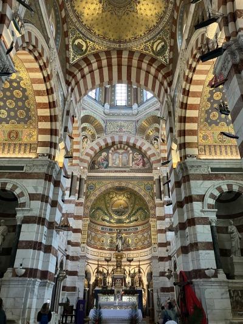 The interior of the church |
The mosaic above the high altar |
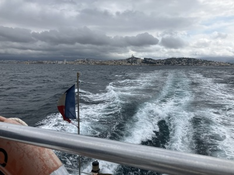 Before leaving Marseille, I took a ferry ride around the nearby islands - you can see Notre Dame on top of the hill |
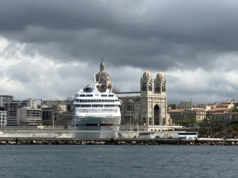
|